The Big Bang theory, our leading cosmological model, is a testament to cumulative human endeavor, built upon the insights and discoveries of numerous brilliant scientists. This section honors the key figures whose theoretical predictions, observational breakthroughs, and meticulous research shaped our understanding of the universe's origin and evolution.
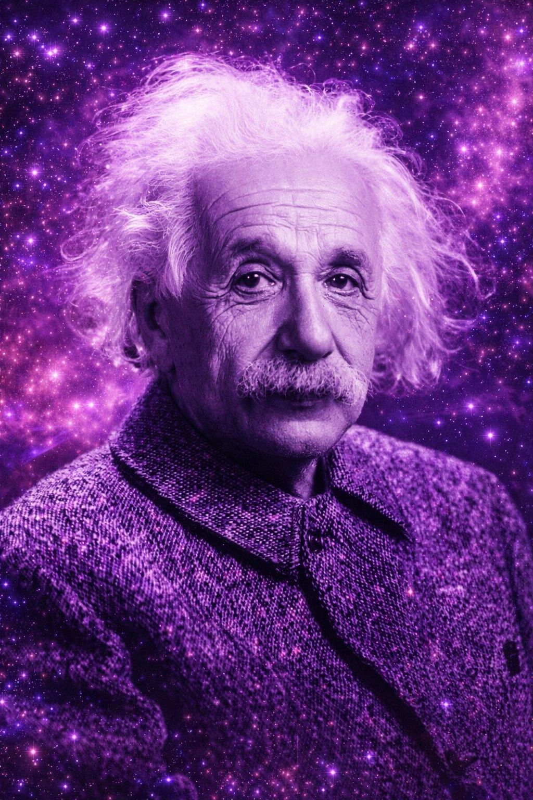
Albert Einstein (1879–1955) revolutionized our understanding of space, time, gravity, and the universe itself with his General Theory of Relativity, published in 1915. This groundbreaking work provided the mathematical and theoretical framework that later allowed scientists like Georges Lemaître to develop the concept of an expanding universe. Einstein's equations showed that gravity is not a force, but a curvature of spacetime caused by mass and energy. When applied to the entire cosmos, these equations suggested that the universe could not be static; it must either be expanding or contracting.
Initially, Einstein preferred a static universe and introduced a term called the cosmological constant (Λ) into his equations in 1917 to counteract gravity and achieve a stable, unchanging universe. This was a theoretical "fix" to match the prevailing view of a static cosmos. However, after Edwin Hubble's observations in 1929 confirmed the universe's expansion, Einstein famously remarked that introducing the cosmological constant was his "biggest blunder." Despite his initial resistance to an expanding universe, his General Relativity provided the essential foundation for the Big Bang model.
Fun Fact: Although his theories laid the groundwork for the Big Bang, Einstein was initially skeptical of Lemaître's expanding universe model. After Lemaître presented his ideas, Einstein reportedly told him, "Your calculations are correct, but your physics is abominable." He later changed his mind after seeing Hubble's data!
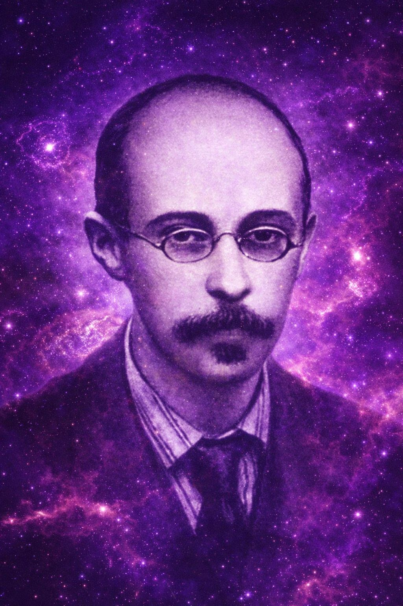
Alexander Alexandrovich Friedmann (June 16, 1888 – September 16, 1925) was a Russian and Soviet physicist and mathematician. Born in Saint Petersburg, Russia, into an artistic family, Friedmann displayed strong mathematical and scientific aptitude early on. He graduated from St. Petersburg State University in 1910, specializing in physics and mathematics. His career spanned academia and meteorology, and he applied his mathematical expertise to military aeronautics during World War I, even participating in record-setting balloon flights. Tragically, Friedmann died prematurely at the age of 37 in 1925 from misdiagnosed typhoid fever. He never lived to see the full empirical validation of his groundbreaking theories.
Friedmann's pivotal contribution to the Big Bang theory lies in his pioneering theoretical work on an expanding universe. In 1922, he published his landmark paper "On the Curvature of Space," deriving non-static solutions to Albert Einstein's field equations of general relativity. Contrary to Einstein's then-prevailing belief in a static universe, Friedmann demonstrated mathematically that these equations allowed for dynamic models where the universe could either be expanding or contracting. These solutions are now known as the Friedmann equations, which describe how the universe's scale factor (which determines large-scale distances) changes with time based on its energy content and geometry. He also found solutions for universes that could oscillate through periods of expansion and contraction, or expand forever.
Initially, Einstein himself rejected Friedmann's conclusions, believing there was a mathematical error. However, after Friedmann wrote to him, Einstein later acknowledged in 1923 that Friedmann’s results were correct and "shed new light". Friedmann's ideas, though initially obscure, laid the theoretical foundation for what would later become the Big Bang theory, predicting cosmic expansion years before Edwin Hubble's observational confirmation in 1929. His work forms a cornerstone of modern cosmological models like the Friedmann–Lemaître–Robertson–Walker (FLRW) metric.
Fun Fact: Friedmann was an adventurous man, participating in military aeronautics during World War I and even taking part in a record-setting balloon flight in 1925, reaching an elevation of 7,400 meters, just months before his untimely death. He also taught distinguished scientists like George Gamow.
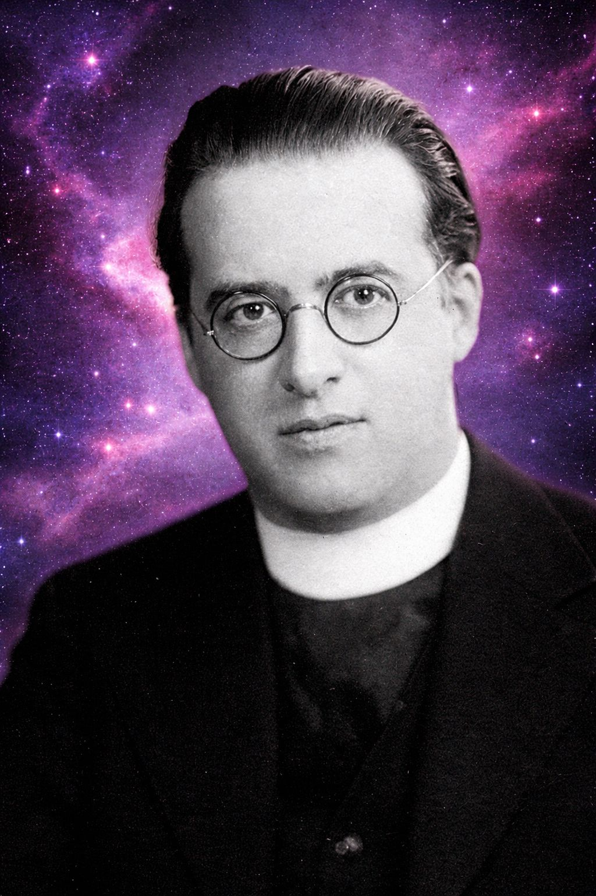
Georges Henri Joseph Édouard Lemaître (1894–1966), a Belgian Catholic priest and physicist, is widely credited as the "father of the Big Bang" theory. In 1927, two years before Edwin Hubble's definitive observations, Lemaître independently published a paper deriving the equations for an expanding universe from Albert Einstein's General Theory of Relativity. He not only predicted the expansion but also provided observational evidence, relating the recession of galaxies to their distances.
In 1931, Lemaître further developed his ideas, proposing the concept of the "primeval atom" (or "cosmic egg"). He suggested that the universe began from an extremely concentrated point of primeval matter, which then fragmented and expanded, leading to the universe we observe today. This was the earliest form of what we now call the Big Bang theory. His theoretical predictions laid the groundwork for modern cosmology.
Fun Fact: After Lemaître published his paper predicting the expanding universe, Albert Einstein initially dismissed it. However, when Hubble's observational evidence emerged, Einstein publicly conceded, calling Lemaître's work "the most beautiful and satisfactory explanation of creation to which I have ever listened." Lemaître also served as a professor at the Catholic University of Louvain.

Edwin Powell Hubble (1889–1953) was an American astronomer whose groundbreaking observational work provided crucial evidence for the expanding universe, directly supporting the Big Bang theory. Working at the Mount Wilson Observatory in California, Hubble made two pivotal discoveries.
First, in the 1920s, he conclusively demonstrated that many nebulae previously thought to be within our Milky Way galaxy were, in fact, entire galaxies far outside it. By observing Cepheid variable stars in these "extragalactic nebulae," he used their predictable pulsating rhythm to accurately measure their immense distances, proving the universe was far vaster than previously imagined.
Second, and most famously, in 1929, Hubble discovered a direct relationship between the distance of a galaxy and the speed at which it was moving away from us. This relationship, now known as Hubble's Law, showed that more distant galaxies receded at a faster rate. This systematic recession of galaxies indicated that the universe itself was expanding, not just that galaxies were moving through a static space. His empirical data provided the strongest observational evidence for Lemaître's theoretical expanding universe model and, by extension, the Big Bang.
Fun Fact: Despite his revolutionary contributions to astronomy, Edwin Hubble never won a Nobel Prize. At the time, the Nobel Prize in Physics did not recognize astronomical work, considering it a branch of geology rather than physics. Hubble actively campaigned to have astronomy recognized as physics, but he died before the change was made, making him ineligible for a posthumous award.
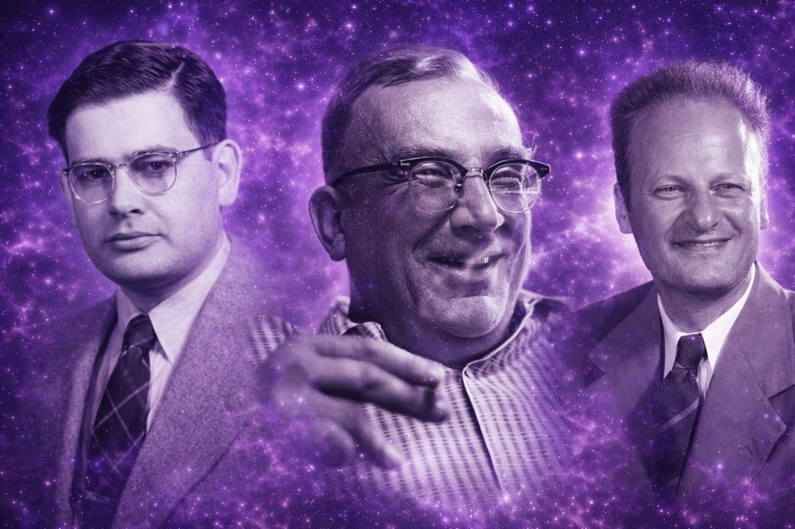
Ralph Asher Alpher (1921–2007) was an American applied mathematician and physicist, born in Washington D.C. He received his education there and worked at the Applied Physics Laboratory of Johns Hopkins University. His most significant work involved a productive collaboration with Robert Herman, especially after earning his doctorate. Alpher's contributions were eventually recognized with the National Medal of Science in 2007.
Alpher's outstanding contribution to the Big Bang theory lies in his work on the origin of chemical elements through nucleosynthesis. His doctoral thesis, supervised by George Gamow, systematically explored the consequences of the hot Big Bang model for primordial element formation. Over a five-year period (1948–1953), he and Robert Herman developed the idea of primordial Big-Bang nucleosynthesis into a sophisticated scientific theory. Most famously, Alpher and Herman predicted the existence of the Cosmic Microwave Background (CMB) radiation, a relic glow from the Big Bang. This prediction, accidentally discovered in 1965, provided crucial evidence supporting the Big Bang theory.
Fun Fact: Despite his crucial contributions, Alpher's work was largely overlooked for decades, with credit often going to others, including for the Big Bang theory and the CMB discovery. He enjoyed working with Gamow, finding him a tremendously stimulating person.
George Antonovich Gamow (1904–1968) was a Russian/American nuclear physicist and cosmologist, born in Odessa, Russia (now Ukraine). After studying in Leningrad, he pioneered the liquid-drop model in nuclear physics and developed the theory for alpha-decay via tunneling. Gamow emigrated to the United States in 1934, teaching at George Washington University for 20 years. He was also a celebrated popular science writer, known for books like "Mr. Tompkins in Wonderland" and "One Two Three... Infinity".
Gamow is considered a pivotal figure in the development of the Big Bang theory. After World War II, he proposed a cosmological model to explain the universe's origin and expansion. His "big idea" was primordial Big-Bang nucleosynthesis, positing that elements were formed in the first few minutes of the initial explosion due to the universe's high temperatures and densities. He supervised Ralph Alpher's doctoral thesis on this very topic. Gamow's brilliant insight also included predicting basic evidence for his theory in microwave radiation.
Fun Fact: Gamow was renowned for his excellent sense of humor and love of pranks. Famously, he added Hans Bethe's name to "The Origin of Chemical Elements" paper (Ralph Alpher's doctoral work) to create the "Alpher-Bethe-Gamow" paper, a playful nod to the Greek letters α, β, γ. This paper was even published on April 1.
Hans Albrecht Bethe (1906–2005) was a German-American physicist whose significant contributions spanned nuclear physics and astrophysics. Born in Strasbourg (then part of the German Empire), he fled Nazi Germany in 1933 due to his Jewish heritage and settled in the United States, joining Cornell University in 1935. During World War II, he led the Theoretical Division of the Manhattan Project, playing a crucial role in developing the atomic bomb. Post-war, he became a vocal advocate for arms control and disarmament. He was awarded the Nobel Prize in Physics in 1967.
While his direct contribution to the cosmological theory of the Big Bang was minor, Bethe provided clarifications on aspects like the neutron-proton ratio in the early universe, refining the nuclear physics details in the Alpher-Gamow paper. His name was primarily included in the famous "Alpher-Bethe-Gamow" paper as part of Gamow's humorous alphabetical pun. More broadly, his groundbreaking 1939 paper on the carbon-nitrogen-oxygen (CNO) cycle explained how stars generate energy through nuclear fusion, which was foundational to understanding stellar processes and the formation of heavier elements beyond initial Big Bang nucleosynthesis.
Fun Fact: Despite being added to the Alpher-Gamow paper as a prank, Bethe was reportedly "tickled to death" to be included. He also famously calculated that a theoretical runaway fusion of atmospheric nitrogen from the atomic bomb was impossible, thereby averting a potential global catastrophe fear. He remained an active figure in physics and research well into his 90s.
Robert Henry Dicke (1916–1997) was a brilliant American experimental physicist and cosmologist, born in St. Louis, Missouri, with a career largely spent at Princeton University. He was known for his broad contributions across radar, atomic physics, quantum optics, gravity physics, astrophysics, and cosmology. During World War II, he worked at the MIT Radiation Laboratory, where he invented the Dicke radiometer, a crucial microwave receiver. He was a recipient of many honors, including the National Medal of Science in 1971.
Dicke's crucial role in the Big Bang theory centers around his independent prediction and interpretation of the Cosmic Microwave Background (CMB). In the early 1960s, driven by ideas of an oscillating universe and contemplating what the universe was doing before its current expansion, Dicke and his colleagues at Princeton (including James Peebles, Peter G. Roll, and David T. Wilkinson) re-derived the prediction of a universe filled with faint, uniform radio waves from the Big Bang's early hot, dense state. They immediately began building a Dicke radiometer to search for this radiation. In 1965, when Arno Penzias and Robert Wilson accidentally detected an unexplained "hiss" in their radio antenna at Bell Labs, they contacted Dicke's group. Dicke and his team promptly interpreted this "static" as the long-sought Cosmic Microwave Background, the direct evidence of the Big Bang's hot origin. This interpretation proved pivotal, turning the unexpected noise into a cornerstone of modern cosmology.
Fun Fact: While many have wondered how Dicke could have "forgotten" the earlier prediction of the CMB by Gamow, Alpher, and Herman, Dicke's group's theoretical interpretation of Penzias and Wilson's accidental detection was crucial. The Dicke radiometer, which he invented during WWII, was the very instrument used by Penzias and Wilson in their Nobel-winning discovery. Later, he also famously used the "Black Hole of Calcutta" prison analogy to explain the inescapable nature of a "black hole," popularizing the term.
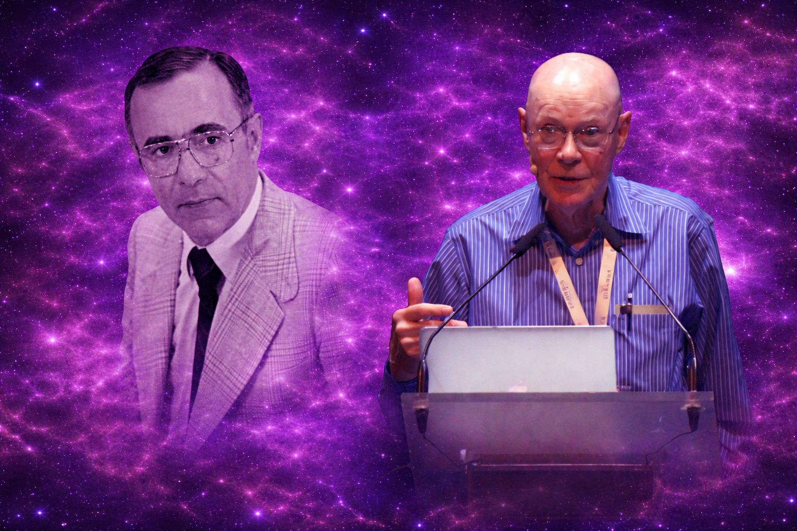
Arno Allan Penzias (1933–2024) was a German-born American radio astronomer and physicist. Born in Munich, Germany, he and his brother were brought to England as part of the Kindertransport evacuation process in 1939, fleeing the Nazi regime. His family then moved to New York City in 1940. He attended Brooklyn Technical High School, graduated with a physics degree from the City College of New York in 1954, and earned a PhD in physics from Columbia University in 1961. In 1961, Penzias joined Bell Laboratories’ Radio Physics Research Department on Crawford Hill in Holmdel, New Jersey. He shared half of the 1978 Nobel Prize in Physics for his pivotal discovery. Penzias passed away at age 90 in 2024.
Penzias's most significant contribution to the Big Bang theory came in 1964 with Robert Wilson, when they accidentally detected the Cosmic Microwave Background (CMB) radiation. While using a supersensitive, 6-meter horn antenna at Bell Labs, originally built for telecommunications, they encountered an unexplained, persistent "hiss" or "static". After meticulously ruling out all terrestrial sources of interference—including radar, radio broadcasting, heat in the receiver, and famously, even removing nesting pigeons and their droppings from the antenna—the noise remained. This uniform field of excess microwave radiation, measured at about 3.5 Kelvin (later refined to ~2.7 Kelvin), was later identified by Robert Dicke's group at Princeton University as the long-sought CMB, the direct evidence of the Big Bang's hot origin. This observation provided compelling evidence for the Big Bang model, ushering in a new era of precision cosmology.
Fun Fact: Penzias chose to study physics after a professor told him he could do the same things engineers could do, but better.
Robert Woodrow Wilson (born 1936) is an American radio astronomer. Born on January 10, 1936, in Houston, Texas, he pursued higher education at Harvard University, earning a Bachelor of Arts degree in 1962, and continued his studies at the California Institute of Technology (Caltech), where he received his Ph.D. in Physics in 1965. After completing his Ph.D., Wilson joined Bell Laboratories in 1963, where he began his groundbreaking work in radio astronomy. He shared half of the 1978 Nobel Prize in Physics with Arno Penzias.
Wilson's pivotal contribution to the Big Bang theory came in 1964 with Arno Penzias, through their accidental discovery of the Cosmic Microwave Background (CMB) radiation. While operating a supersensitive 6-meter horn antenna at Bell Labs in Holmdel, New Jersey, they detected a persistent, uniform radio "hiss". They meticulously tried to eliminate all potential sources of this noise, including ruling out interference from Earth, the Sun, or our galaxy, and even evicting pigeons nesting in the antenna and cleaning out their droppings. The noise, measured at about 3.5 Kelvin, remained. This unexplained signal was later identified by Robert Dicke's team at Princeton University as the long-predicted CMB, the relic radiation from the Big Bang. Their discovery provided strong evidence for the Big Bang model, shifting the field from speculative theory to observational science and becoming a cornerstone of modern cosmology.
Fun Fact: Wilson has a minor planet named after him, 13429 Robertwilson, discovered in 1999. He once appeared on the television show "The Big Bang Theory" as a guest star, playing himself.
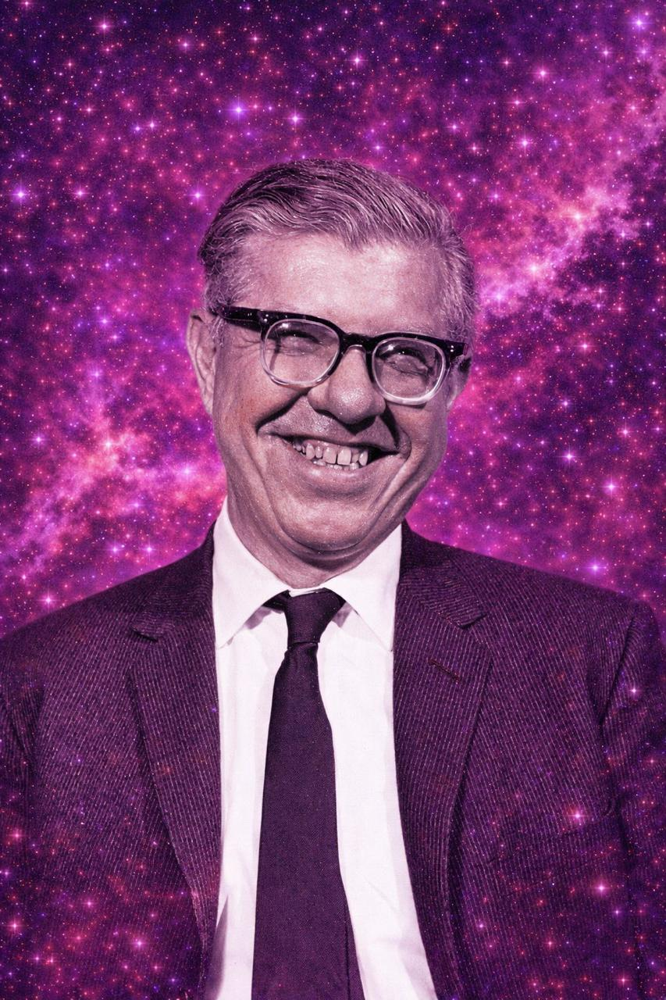
Sir Fred Hoyle (1915–2001), was an English astronomer and cosmologist, primarily remembered for his significant contributions to astrophysics and for his controversial stance on cosmological matters. He was born on June 24, 1915, in Bingley, West Yorkshire, England. He developed an early interest in mathematics and science, winning a scholarship to Emmanuel College, Cambridge. During World War II, Hoyle worked on radar research for the British Admiralty. After the war, he returned to Cambridge University, where he developed his theory of stellar nucleosynthesis. He spent most of his working life at St John's College, Cambridge, and served as the founding director of the Institute of Theoretical Astronomy at Cambridge. Hoyle passed away on August 20, 2001, in Bournemouth, England. He was knighted in 1972.
Hoyle is famously, and ironically, known for coining the term "Big Bang." He used the phrase during a BBC radio broadcast on March 28, 1949, not as an endorsement, but as a derisive term to mock the opposing theory that the universe began with a singular, explosive event. He was a staunch proponent of the Steady-State theory, a rival cosmological model he helped develop with Hermann Bondi and Thomas Gold in the late 1940s. The Steady-State theory proposed an eternal and unchanging universe that maintained a constant density by continuously creating new matter as it expanded. While he opposed the Big Bang theory, Hoyle's work profoundly contributed to understanding the origin of elements heavier than helium. He formulated the theory of stellar nucleosynthesis, showing that elements like carbon and other heavy elements are forged inside massive stars through nuclear fusion reactions and then scattered into space by supernovae. This work, particularly his influential B²FH paper (co-authored with E. Margaret Burbidge, Geoffrey Burbidge, and William A. Fowler), explained how the chemical elements essential for life are made, regardless of the universe's origin.
Fun Fact: Despite his deep skepticism and opposition to the Big Bang theory, Fred Hoyle's dismissive term "Big Bang" unintentionally became the widely accepted and enduring name for the theory it was meant to ridicule. He also wrote numerous science fiction novels, including "The Black Cloud" and "A for Andromeda," often exploring astrophysical concepts in his fiction.
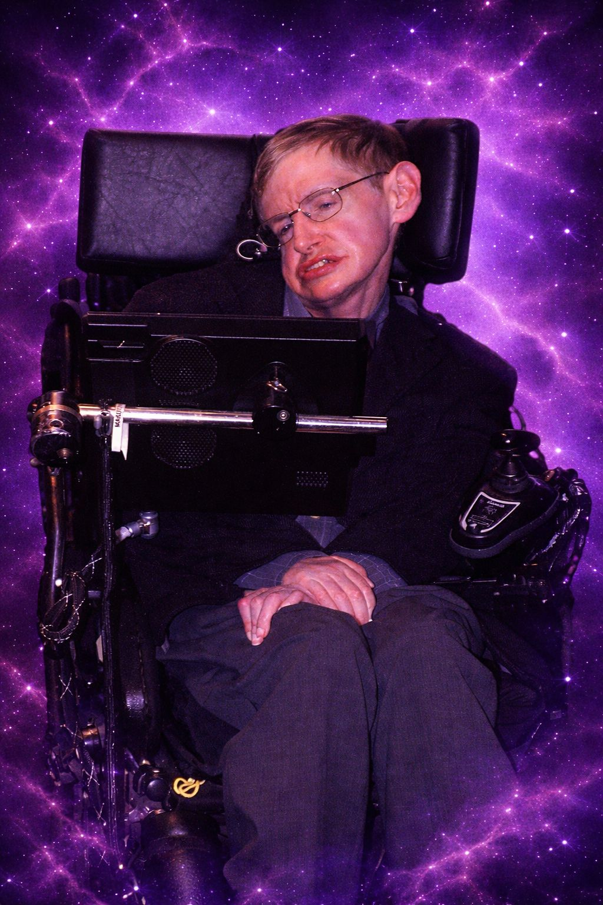
Stephen William Hawking (1942–2018) was a British theoretical physicist and cosmologist renowned for his profound contributions to our understanding of black holes and the origins of the universe. Born in Oxford, England, he was diagnosed with Amyotrophic Lateral Sclerosis (ALS) at the age of 21, a condition that progressively paralyzed him throughout his life. Despite these physical challenges, Hawking continued his groundbreaking research, communicating through a voice synthesizer that became an iconic part of his identity. He earned his Ph.D. in cosmology from the University of Cambridge, where he would later hold the prestigious position of Lucasian Professor of Mathematics, a chair once occupied by Sir Isaac Newton.
Hawking's contributions to the Big Bang theory span both foundational discoveries and later, more modern refinements. In his earlier, classical work, primarily in the 1960s and 70s, he collaborated with Roger Penrose on the Penrose-Hawking singularity theorems. These theorems demonstrated that, under certain general conditions derived from Einstein's theory of general relativity, the universe must have originated from a singularity – an infinitely hot and dense point. This provided strong mathematical backing for the idea that the Big Bang was not just a hypothesis, but an inevitable consequence of physics, marking the beginning of space and time themselves.
As his understanding evolved and quantum mechanics became more integrated into cosmology, Hawking (along with James Hartle) developed the "no-boundary proposal" or Hartle-Hawking model in the early 1980s. This quantum cosmology theory suggested that the universe did not begin with a sharp singularity where physics breaks down, but rather emerged smoothly without a beginning in time or a temporal boundary. This concept uses quantum mechanics and the idea of "imaginary time" to describe a universe that is finite in extent but has no edge, much like the surface of a sphere has no boundary. This proposal offered a way to avoid the problematic initial singularity and provided a framework for understanding the very first moments of the universe from a quantum perspective.
Towards the end of his life, Hawking continued to refine his ideas, collaborating with Thomas Hertog on what is sometimes called the "top-down cosmology" or "smooth exit from eternal inflation" theory. This work suggested a more modest and observable class of universes emerging from inflation, potentially reducing the vast number of possibilities predicted by earlier multiverse theories. These later contributions were essentially sophisticated elaborations and adjustments to his earlier quantum proposals, aiming to make predictions that could be tested observationally regarding the initial conditions of the Big Bang and the resulting structure of our universe.
Fun Fact: Stephen Hawking was not always a stellar student; he was known for being rather mediocre in his early school years and even once stated that he found his first year at Oxford University "very boring." He was also famous for his wit and humor, and made several guest appearances on "The Simpsons" and "The Big Bang Theory," always portraying himself.
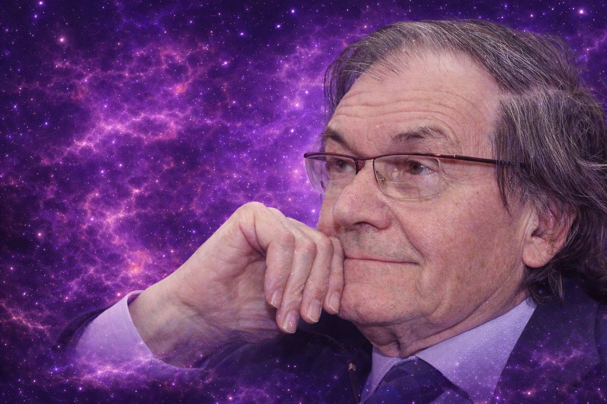
Sir Roger Penrose (1931-present) is a distinguished British mathematician, mathematical physicist, and philosopher of science. Born in Colchester, Essex, England, he comes from a family of noted intellectuals; his father was a psychiatrist and geneticist, and his siblings also became distinguished in their fields. Penrose received his Bachelor of Science from University College London and his Ph.D. from St John's College, Cambridge. He currently holds the position of Emeritus Rouse Ball Professor of Mathematics at the University of Oxford. Penrose shared the 2020 Nobel Prize in Physics for his discovery that black hole formation is a robust prediction of Einstein's general theory of relativity.
Penrose's individual contributions to the Big Bang theory are primarily rooted in his work on spacetime singularities. In 1965, he published a groundbreaking paper demonstrating that if a sufficiently massive star undergoes gravitational collapse, it will inevitably form a singularity within a black hole. This work was revolutionary because it proved that singularities were not just mathematical artifacts of highly symmetric solutions, but a generic prediction of general relativity under realistic conditions. His use of innovative mathematical techniques extended Einstein's theory to show the inevitability of these extreme points where the laws of physics as we know them break down.
This initial work on black hole singularities laid the mathematical and conceptual groundwork for his later, highly influential collaboration with Stephen Hawking. Together, they developed the Penrose-Hawking singularity theorems, which extended Penrose's findings to the universe as a whole. By reversing the direction of time, these theorems showed that if the universe is expanding as observed, then it must have originated from a singularity in the distant past – essentially providing strong theoretical evidence for the Big Bang as a true beginning of space and time.
In more recent years, Penrose has also proposed a highly speculative, yet intriguing, alternative to the conventional Big Bang model called Conformal Cyclic Cosmology (CCC). This model suggests that the Big Bang was not the absolute beginning of everything, but rather a transition from a previous, infinitely expanded "aeon" to our own. In CCC, universes cycle endlessly, with each ending in an extremely dilute state that smoothly transitions into the Big Bang of the next. Penrose and his collaborators have even claimed to find possible observational evidence for this in the Cosmic Microwave Background (CMB), such as concentric circular patterns, which they refer to as "Hawking Points". While CCC remains a minority view and is highly debated within the scientific community, it represents a modern attempt to address fundamental questions about what might have existed "before" the Big Bang, or if the concept of "before" even applies in an eternal, cyclical universe.
Fun Fact: Beyond his profound work in theoretical physics, Sir Roger Penrose is also known for creating "impossible objects" inspired by the artist M.C. Escher, such as the Penrose triangle and Penrose stairs. He also discovered Penrose tilings, non-periodic tiling patterns that later proved crucial for the discovery of quasicrystals.
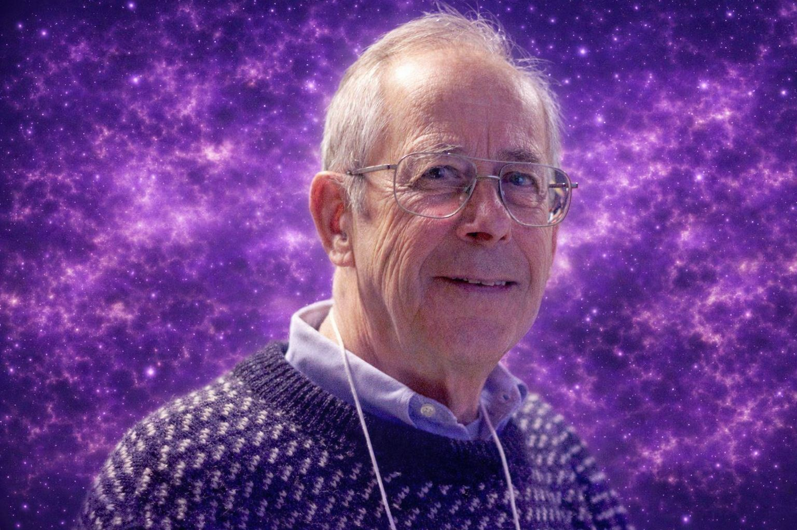
Phillip James Edwin Peebles (1935-present) is a Canadian-American astrophysicist, astronomer, and theoretical cosmologist. After completing his Bachelor of Science at the University of Manitoba, he pursued graduate studies at Princeton University, where he received his Ph.D. in physics in 1962 under the supervision of Robert Dicke. He remained at Princeton for his entire career, becoming the Albert Einstein Professor in Science, emeritus, and is widely regarded as one of the most influential theoretical cosmologists of the modern era.
Peebles played a central role in transforming cosmology into a precision science. In 1965, working with Robert Dicke and other Princeton physicists, he provided the theoretical interpretation of the Cosmic Microwave Background (CMB) discovered by Arno Penzias and Robert Wilson, establishing it as direct evidence for the Big Bang model. He also developed early quantitative predictions for Big Bang nucleosynthesis, calculating primordial element abundances based on the temperature of the early universe.
During the 1970s, Peebles pioneered the theory of structure formation, explaining how galaxies and large-scale cosmic structures emerged from initial density fluctuations. He predicted measurable fluctuations in the Cosmic Microwave Background, later confirmed by WMAP and Planck. His work also established the importance of dark matter and dark energy in shaping the evolution of the universe.
He further contributed to the theoretical framework of modern cosmology, including the development of models describing density fluctuations and large-scale structure formation. His work laid the foundation for much of what is now considered standard cosmological theory and is reflected in his book Cosmology’s Century: An Inside History of Our Modern Understanding of the Universe.
For his contributions to physical cosmology, Peebles was awarded half of the 2019 Nobel Prize in Physics.
Fun Fact: When Peebles received the call informing him of his Nobel Prize, he remarked that he was “the last man standing” from the early era of modern cosmology. He has also described himself as a convinced agnostic.
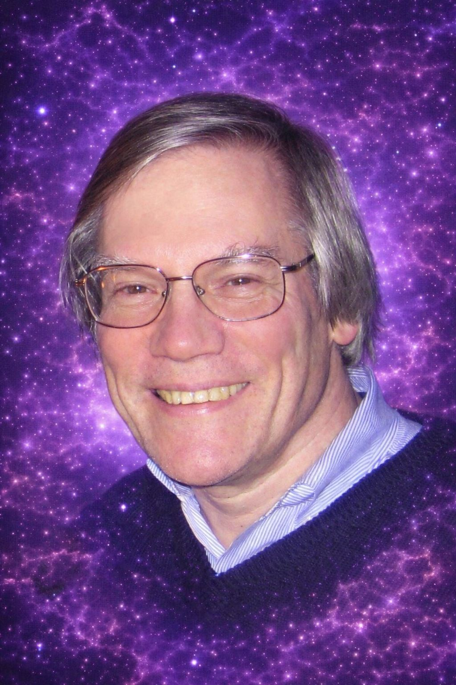
Alan Harvey Guth (1947–present) is an American theoretical physicist and cosmologist. He was born in New Brunswick, New Jersey, and currently holds the position of Victor Weisskopf Professor of Physics at the Massachusetts Institute of Technology (MIT). He earned his SB, SM, and PhD degrees in physics from MIT.
Guth's foundational work profoundly impacted the Big Bang theory by proposing the concept of cosmic inflation. This groundbreaking theory, developed to address critical issues within the standard Big Bang model such as the "horizon problem" and the "flatness problem," posits a period of extremely rapid, exponential expansion in the universe during its earliest moments. His initial research in elementary particle physics laid the groundwork for this idea, fundamentally reshaping modern cosmology.
His contributions continue to influence the field as he refines the theory of cosmic inflation and explores its implications for the universe's structure and origins. He was recognized with the 2014 Kavli Prize, alongside Alexei Starobinsky and Andrei Linde, for his pioneering work on cosmic inflation. Beyond his research, Guth is also a noted communicator of physics, dedicated to making complex cosmological ideas understandable to a broader audience.
Fun Fact: Alan Guth famously developed the theory of cosmic inflation while a postdoctoral researcher, originally referring to his idea as the "spectacular realization" in his notebook. He also once worked on elementary particle physics before shifting his focus entirely to cosmology.
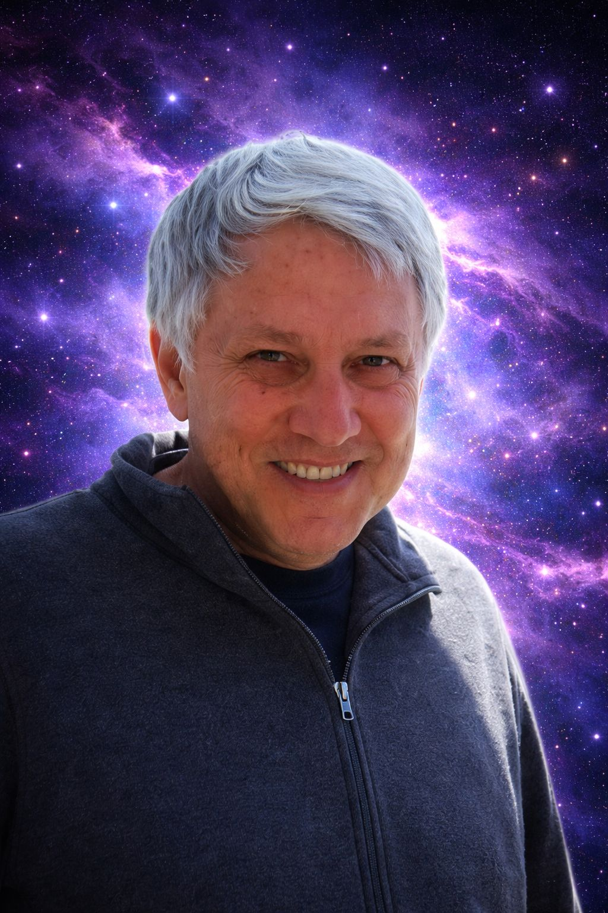
Linde is a principal architect of the inflationary universe theory, a concept that has revolutionized modern cosmology. His work expanded upon early ideas from Alan Guth, and in 1982, Linde proposed the "new inflationary universe scenario". This model addressed some of the problems of Guth's original theory by introducing a "slow-roll" mechanism for the end of the inflationary epoch, preserving the attractive features of a rapidly expanding early universe.
Further evolving his ideas, Linde introduced the concept of chaotic inflation in 1983. This theory abandoned assumptions about initial thermal equilibrium and suggested that inflation could arise from a much broader set of initial conditions, making it more robust. Chaotic inflation became a prototype for many subsequent inflationary models. He also developed the theory of an eternal inflationary multiverse, suggesting that the exponential expansion, once started, continues endlessly in some parts of the universe, leading to a vast fractal of many exponentially large regions, each potentially with different laws of physics.
Linde's current research focuses on the construction of realistic models of inflation, often based on supergravity and string theory, and investigating the conceptual issues related to the inflationary multiverse. He has also contributed to theories on the creation of matter after inflation and the nature of dark energy. His influence is widely recognized through numerous awards, including the 2002 Dirac Medal (shared with Alan Guth and Paul Steinhardt), the 2004 Gruber Prize in Cosmology (with Alan Guth), and the 2014 Kavli Prize (with Alan Guth and Alexei Starobinsky) for their pioneering work on cosmic inflation.
Fun Fact: Andrei Linde is married to theoretical physicist Renata Kallosh, and they have collaborated on research, including the development of cosmological attractors within inflationary models.
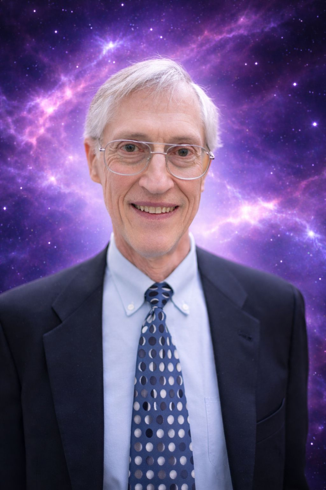
Mather's pivotal contribution to the Big Bang theory stems from his leadership of the Cosmic Background Explorer (COBE) satellite project. As an NRC postdoctoral fellow at the Goddard Institute for Space Studies in New York City, he led the initial proposal efforts for COBE between 1974 and 1976. The COBE mission, launched in 1989, was designed to measure the diffuse infrared and microwave radiation from the early universe. Mather served as the Study Scientist (1976-1988) and Project Scientist (1988-1998) for COBE, and was also the Principal Investigator for the Far Infrared Absolute Spectrophotometer (FIRAS) instrument on the satellite. The COBE project's groundbreaking findings provided crucial evidence supporting the Big Bang theory by revealing the black body form and anisotropy of the cosmic microwave background radiation (CMBR). These precise measurements confirmed the predictions of the Big Bang model and effectively elevated cosmology to a precision science, providing a "baby picture of the universe" from approximately 389,000 years after the Big Bang.
Beyond COBE, Mather has continued to significantly impact space science. From 1995 until 2023, he served as the Senior Project Scientist for the James Webb Space Telescope (JWST), leading the science team and representing scientific interests within the project's management. The JWST is designed to observe some of the most distant events and objects in the universe, such as the formation of the first galaxies, pushing the boundaries of our understanding of cosmic origins. He is also the co-author of "The Very First Light: The True Inside Story of the Scientific Journey Back to the Dawn of the Universe," a book chronicling the COBE project for the general public. Mather's widespread recognition includes being listed among "Time" magazine's 100 Most Influential People in The World in 2007 and again in 2012 for a special issue on new space discoveries.
Fun Fact: Mather's Ph.D. thesis project, aimed at measuring cosmic microwave background radiation, initially didn't work when he tried to use ground-based or balloon-borne instruments due to atmospheric interference. He later realized such measurements needed to be done from space, which eventually led to the COBE satellite proposal. He even used his Nobel Prize money to establish a scholarship program to help NASA and Goddard Center interns present their research at professional conferences.
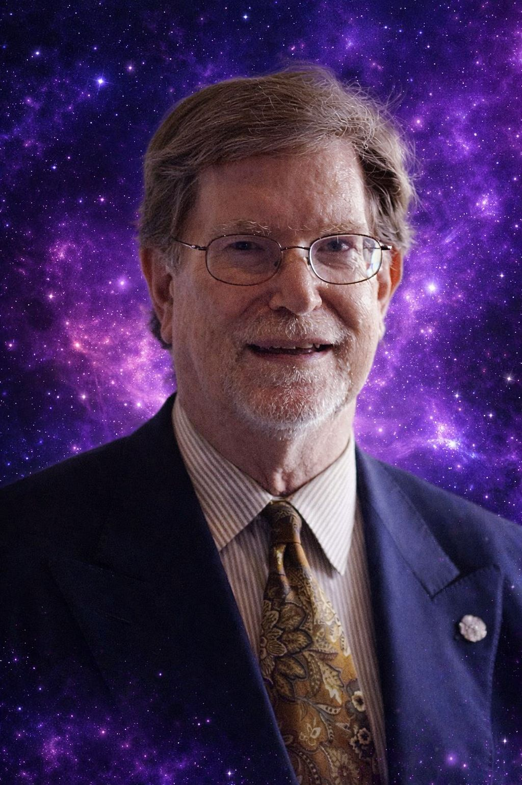
Smoot's early work in cosmology included collaborating with Luis Walter Alvarez on the High Altitude Particle Physics Experiment (HAPPE), a stratospheric weather balloon designed to detect antimatter. His significant contributions to the Big Bang theory began in the 1970s when he took an interest in the cosmic microwave background radiation (CMB), which had been discovered by Arno Allan Penzias and Robert Woodrow Wilson in 1964. Smoot developed a differential radiometer (with Alvarez and Richard A. Muller) to measure temperature differences in the CMB. This instrument, flown on a Lockheed U-2 plane, showed a dipole pattern in the CMB temperature, indicating the Earth's motion relative to the last scattering surface.
His most groundbreaking achievement, for which he shared the 2006 Nobel Prize in Physics with John C. Mather, was for his work on the Cosmic Background Explorer (COBE) satellite. Smoot had the primary responsibility for measuring the tiny fluctuations or anisotropies in the CMB temperature. The COBE mission, launched in 1989, provided the first detailed measurements of these minute temperature variations, which were crucial evidence for the Big Bang theory. These slight variations represent the seeds from which galaxies and galaxy clusters eventually formed, essentially giving us a "baby picture of the universe." Stephen Hawking famously called this discovery "the greatest scientific discovery of the century." The Nobel Prize committee noted that the COBE-project could be regarded as the starting point for cosmology as a precision science.
In his later career, Smoot continued his work on CMB observations and analysis, collaborating on experiments like the Millimeter Anisotropy eXperiment IMaging Array (MAXIMA) and the Planck satellite, which further refined CMB measurements. He was also involved in the design of the Supernova/Acceleration Probe (SNAP) and the BigBOSS/DESI project to map galaxy locations. Smoot was a professor at the University of California, Berkeley, and later joined Université Paris-Cité in 2009. He was a strong advocate for public understanding of science, co-authoring the popular science book "Wrinkles in Time" with Keay Davidson, and appearing in cameos on "The Big Bang Theory." He also used a portion of his Nobel Prize winnings to fund the Berkeley Center for Cosmological Physics to support postdoctoral students, graduate students, and faculty.
Fun Fact: Smoot was one of only two people to win the million-dollar prize on the Fox television show "Are You Smarter Than a 5th Grader?" in 2009. He also had a cameo appearance as himself in "The Terminator Decoupling" episode of "The Big Bang Theory," having contacted the show as a fan of their physics-based plots.
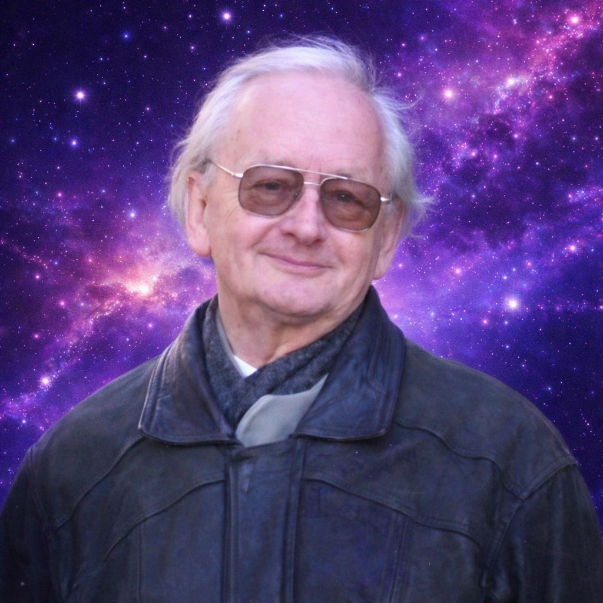
Starobinsky was a pioneer of the theory of cosmic inflation. In 1979, he became the first to propose a model for how the early universe could have undergone an extremely rapid period of exponential expansion, now known as Starobinsky inflation. His model posited that this expansion was driven by quantum gravity effects, rather than a hypothetical field. He also calculated that this expansion would have produced gravitational waves detectable today as a background, a prediction that has since been a target for observational cosmology. Earlier in the 1970s, his research, alongside Zeldovich, also involved the study of particle creation in the early universe and from rotating black holes. Building on Zeldovich's prior work in 1973, he showed that rotating black holes must emit particles according to the uncertainty principle, which influenced Stephen Hawking's later conjecture of Hawking radiation.
In the early 1980s, Starobinsky, along with Viatcheslav Mukhanov and Gennady Chibisov, developed the theory of how quantum fluctuations in the early universe would have been "blown up" by inflation to provide the seeds for the large-scale structure of the universe we observe today. Their predictions have been matched by observations of the cosmic microwave background (CMB). Starobinsky's model of inflation implies that quantum fluctuations, random disturbances of a point in space, would have been stretched beyond the quantum scale by the exponential expansion of the universe. For his pioneering contributions to the theory of cosmic inflation, Starobinsky was awarded the 2014 Kavli Prize in Astrophysics jointly with Alan Guth and Andrei Linde. He also received numerous other accolades, including the 1996 Friedmann Prize, the 2009 Tomalla Prize (shared with Mukhanov), the 2013 Gruber Prize in Cosmology (also with Mukhanov), and the 2019 Dirac Medal.
Fun Fact: While his groundbreaking work on inflation in the Soviet Union remained unknown outside the country for a period, his 1979 model of cosmic inflation was independently proposed around the same time that Alan Guth developed his own theory of inflation to address cosmological problems like the horizon and flatness problems. In February 2022, he signed an open letter by Russian scientists condemning the Russian invasion of Ukraine.
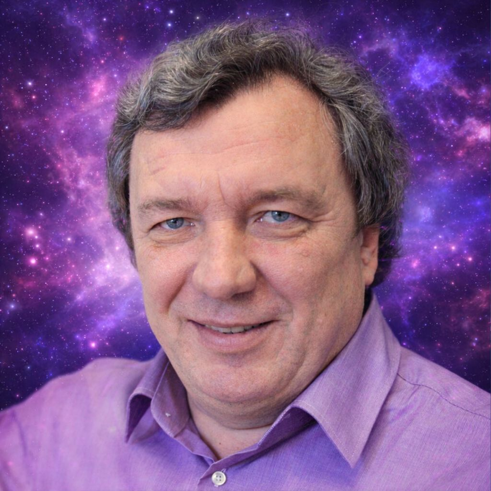
Mukhanov is best known for his groundbreaking work on the quantum origin of the Universe's structure. His significant contributions to the Big Bang theory began in 1980-1981 while working with Gennady Chibisov at the Lebedev Physical Institute in Moscow. Together, they predicted the spectrum of inhomogeneities in the Universe that originated from initial quantum fluctuations. This theory suggests that microscopic quantum fluctuations in the very early, rapidly expanding universe were amplified to become the seeds for the large-scale structure of the universe, including the formation of galaxies and their clusters. The predictions from this theory are in excellent agreement with experimental measurements of the Cosmic Microwave Background Radiation (CMB), particularly from missions like the Planck satellite, confirming that quantum fluctuations indeed served as the "seeds" for galaxies.
Mukhanov later proved that the results he obtained with Chibisov in 1981 are of generic origin, and he further developed a general consistent quantum cosmological perturbation theory. His work has been recognized with numerous awards, including the Gold Medal of the Academy of Sciences of the USSR (1988), the Oskar Klein Medal (2006), the Tomalla Prize (2009, shared with Alexei Starobinsky), the Gruber Prize in Cosmology (2013, also with Starobinsky), the Max Planck Medal (2015), and the Dirac Medal (2019). His "Physical Foundations of Cosmology" (2005) is a widely respected textbook. He is also the Scientific Director of the Journal of Cosmology and Astroparticle Physics.
Fun Fact: Mukhanov was interested in physics from early childhood, not because of school classes, but from acquiring books by great physicists "for intellectual pleasure." No one in his family had attended university. He jokingly remarked that during his doctorate studies, he "didn't work to make the experiments happy, I worked to make Zeldovich happy," referring to his highly influential advisor Yakov Zeldovich.
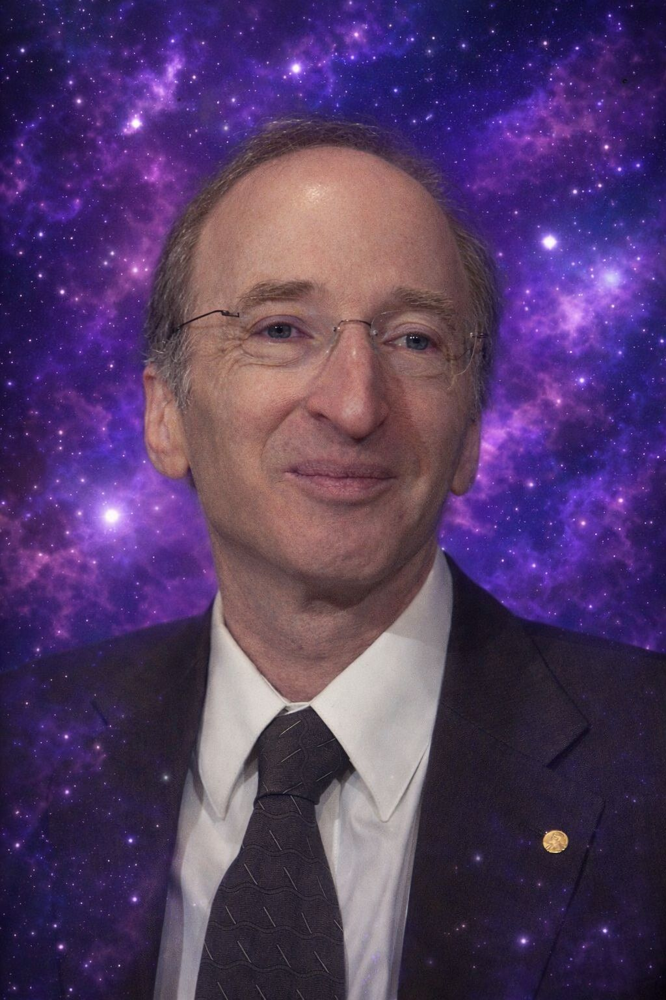
Perlmutter's early work, including his Ph.D. thesis titled "An Astrometric Search for a Stellar Companion to the Sun," involved the use of an automated telescope to search for Nemesis candidates and supernovae. This early experience laid the groundwork for his future cosmological endeavors. His most significant contribution to the Big Bang theory came in 1998, when his Supernova Cosmology Project team, based at Berkeley Lab, along with the competing High-z Supernova Search Team (led by Brian P. Schmidt and Adam G. Riess), independently discovered that the expansion of the universe is accelerating. This unexpected finding, contrary to the prevailing theory that gravity would cause the expansion to slow down, revolutionized cosmology and suggested the existence of an enigmatic dark energy that constitutes about 70% of the universe's mass-energy. The discovery was so profound that it earned Perlmutter, Riess, and Schmidt the 2011 Nobel Prize in Physics.
In his modern contributions, Perlmutter continues to be a lead investigator in projects aimed at precisely determining the rate at which the universe is accelerating. He has been involved with the Supernova/Acceleration Probe (SNAP) project, which aims to launch a satellite dedicated to finding and studying more supernovae in the distant universe. He is also active in the Berkeley Earth Surface Temperature project and serves as the director of the Berkeley Institute for Data Science and executive director of the Berkeley Center for Cosmological Physics. Perlmutter has been recognized with numerous awards beyond the Nobel Prize, including the Ernest Orlando Lawrence Award (2002), the Shaw Prize in Astronomy (2006), the Gruber Cosmology Prize (2007), and the Breakthrough Prize in Fundamental Physics (2015). He is also dedicated to science education, teaching courses like "Physics of Music" and "Sense and Sensibility and Science" to promote scientific critical thinking.
Fun Fact: Perlmutter's discovery that the universe's expansion was accelerating came as a complete surprise, even to his own team, who had initially set out to measure its deceleration. He reportedly thought there must be a mistake in their measurements or calculations. He also had a supercomputer named "Perlmutter" in his honor in 2020 by the U.S. Department of Energy. His work has even been referenced on the CBS television series "The Big Bang Theory," where the character Sheldon Cooper jealously questioned the decision to award Perlmutter a Nobel Prize.
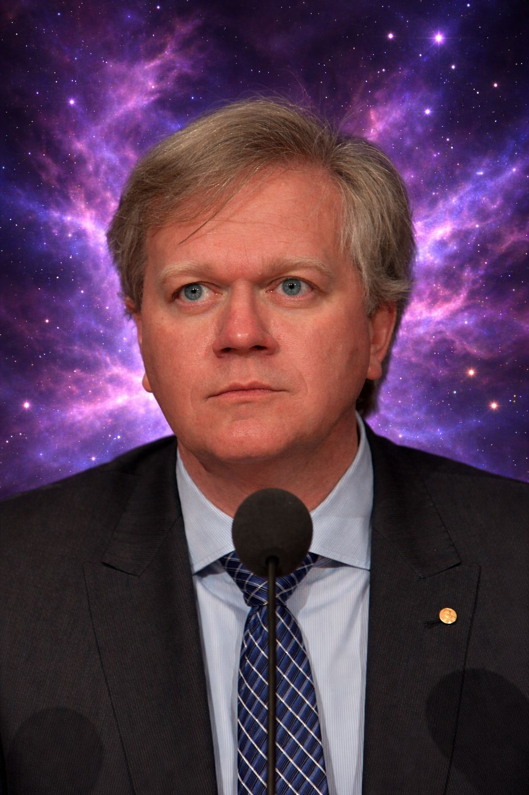
Schmidt's contributions to the Big Bang theory are most famously tied to his leadership of the High-Z Supernova Search Team. He initially set out, with colleagues like Nicholas Suntzeff and Adam Riess, to measure the expected deceleration of the universe using Type Ia supernovae (exploding stars that emit a consistent amount of light, making them "standard candles" for cosmic distances). This work aimed to measure the Hubble Constant and the deceleration parameter (q0). His team's groundbreaking discovery, made in 1998, alongside Saul Perlmutter's Supernova Cosmology Project, revealed something astonishing: the expansion of the universe is accelerating, not slowing down as had been theorized. This implied the existence of a mysterious force now known as dark energy, which is believed to make up about 70% of the universe's mass-energy. This unexpected finding fundamentally changed our understanding of the universe, leading to Schmidt, Perlmutter, and Riess jointly receiving the 2011 Nobel Prize in Physics for their work.
In addition to his Nobel-winning work, Schmidt has continued to contribute to cosmology and astronomy. He currently leads the SkyMapper telescope Project and the associated Southern Sky Survey, an initiative to create a digital map of the entire southern sky. He has been recognized with numerous other awards, including the Pawsey Medal (2001), the Shaw Prize in Astronomy (2006, shared with Perlmutter and Riess), the Gruber Prize for Cosmology (2007, shared with his High-Z SN Search Team colleagues and Saul Perlmutter's team), and the Breakthrough Prize in Fundamental Physics (2015). He is also dedicated to science communication and public advocacy, using his platform to explain the importance of science to society.
Fun Fact: When Schmidt first encountered the data suggesting the universe's accelerating expansion, his initial reaction was to believe he and his team had made a mistake. He reportedly thought, "Alright, we have screwed up something." He even makes his own wine at his vineyard in Australia, using starlight not just to observe the universe but also to cultivate his grapes.
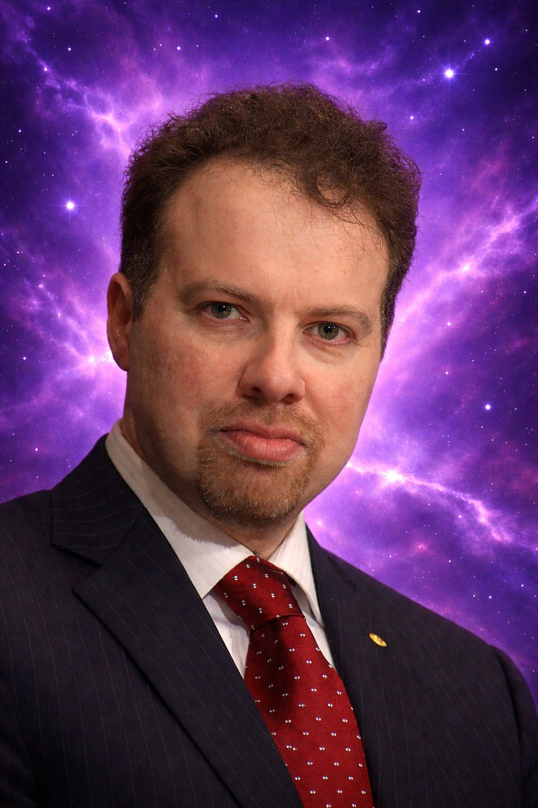
Riess's early career involved extensive research into Type Ia supernovae, which are crucial for measuring cosmic distances due to their consistent peak luminosity. He became a Miller Fellow at the University of California, Berkeley, from 1996 to 1999, during which period his most significant work on the Big Bang theory unfolded. In 1998, Riess led a study for the High-Z Supernova Search Team, which, through painstaking measurements of distant Type Ia supernovae, provided the first direct and published evidence that the expansion of the universe was accelerating. This finding was a monumental surprise, as existing models predicted that gravity should be slowing the universe's expansion. This unexpected acceleration implied the existence of a mysterious force dubbed dark energy, now believed to constitute approximately 70% of the universe's mass-energy. The discovery was so transformative that Science Magazine called it the "Breakthrough Discovery of the Year" in 1998. For this work, Riess, along with Saul Perlmutter and Brian P. Schmidt, was awarded the 2011 Nobel Prize in Physics.
In his modern contributions, Riess continues to be at the forefront of cosmology research, particularly focusing on refining measurements of the Hubble Constant, the rate of the universe's expansion. He leads the Supernova H0 for the Equation of State (SH0ES) Team, using the Hubble Space Telescope to analyze Cepheid variables (pulsating stars) and supernovae with unprecedented precision. His work has revealed a significant discrepancy, known as the "Hubble Tension," between the expansion rate measured from the early universe (via the cosmic microwave background) and local measurements. This tension suggests that our understanding of cosmic phenomena and fundamental physics might be incomplete, potentially indicating new physics beyond the standard cosmological model, such as evolving dark energy, new particle species, or modifications to General Relativity. Recent data from the James Webb Space Telescope (JWST), corroborated by Hubble, reinforces these findings, deepening the mystery. Riess's ongoing research challenges and refines existing cosmological theories, with implications for the universe's history, future, and the very nature of dark energy.
Fun Fact: When Riess discovered the universe's accelerating expansion, he reportedly thought there must be a mistake in his calculations, as it contradicted the prevailing scientific expectation. He also made his undergraduate final research paper on the 1919 "Black Sox" scandal in baseball, demonstrating his diverse interests. In his early courtship with his wife, Nancy, they would communicate across the Charles River by blinking flashlights between their apartments after he moved to Harvard from MIT.
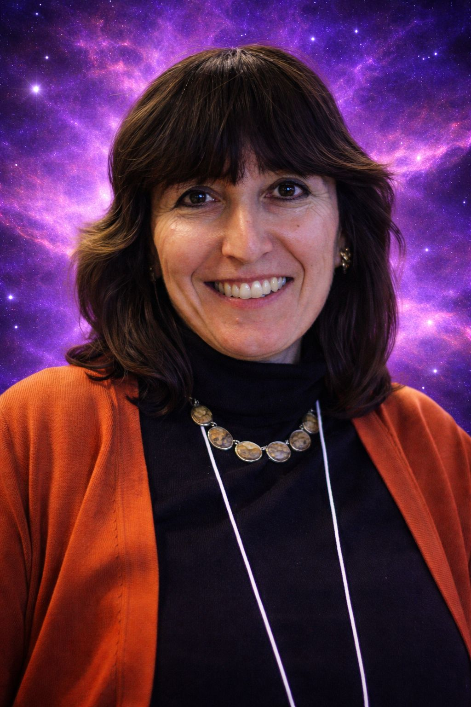
Freedman's pivotal contributions to the Big Bang theory largely center on accurately determining the expansion rate of the universe, a quantity known as the Hubble Constant. She was the co-leader of the international Hubble Space Telescope (HST) Key Project, a large-scale program initiated in the 1990s. This project aimed to establish the extragalactic distance scale with unprecedented precision. Her team utilized Cepheid variable stars as "standard candles" to measure distances to 24 galaxies and, ultimately, derived a value for the Hubble Constant accurate to 10% by 2001. This significantly reduced a long-standing, factor-of-two debate about the universe's expansion rate and age, solidifying the observational foundation of the Big Bang model.
In her modern work, Freedman continues to refine measurements of the Hubble Constant, focusing on understanding a significant cosmological discrepancy known as the "Hubble Tension." This tension arises because the expansion rate inferred from observations of the early universe (like the cosmic microwave background) differs from local measurements made using Cepheid stars and supernovae. Freedman's recent efforts, particularly with her Carnegie-Chicago Hubble Program (CCHP) and analysis using the James Webb Space Telescope (JWST), involve exploring alternative distance indicators like the Tip of the Red Giant Branch (TRGB) and J-region Asymptotic Giant Branch (JAGB) stars. Her work suggests that there might be unrecognized systematic errors in some measurement methods, or potentially new physics beyond the standard cosmological model is at play. Her dedication to independent measurements and resolving this tension is crucial for a complete understanding of the universe's expansion and evolution. She has received numerous accolades for her contributions, including the National Medal of Science (2025), the Gruber Cosmology Prize (2009), and the Dannie Heineman Prize for Astrophysics (2016). In 2025, Time magazine also recognized her as one of the world's 100 most influential people.
Fun Fact: An asteroid, 107638 Wendyfreedman, discovered in 2001, was named in her honor. Her early fascination with science was sparked by her father's explanation that light they saw from distant stars might come from stars that no longer existed, an idea that deeply intrigued her young mind.
 Issac Tabares
Issac Tabares